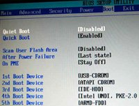

Configuración del arranque del ordenador.
La forma habitual de arranque o inicio de un ordenador de tipo PC pasa por ejecutar el POST o auto chequeo inicial, que verifica que el hardware instalado funciona con normalidad, tras lo cual la BIOS debe cumplir su misión de localizar un sistema operativo y cargarlo en memoria para que se haga con el control de la máquina.
La búsqueda se inicia, siguiendo el orden de lista de los dispositivos declarados en la secuencia de arranque hasta que se consigue iniciar un sistema operativo desde alguno de ellos.
Puede ser que la BIOS no consiga localizar un sistema operativo en ninguno de los dispositivos declarados en la secuencia de arranque, en cuyo caso mostrará en pantalla un mensaje indicando los motivos que le impiden continuar el arranque y terminará su ejecución.
La BIOS para localizar el sistema operativo en un disco duro ejecuta el código allí guardado. Así se inicia el proceso llamado de carga por encadenamiento o arranque multietapas en el que varios pequeños programas, situados en lugares estratégicos, se van buscando y ejecutando unos a otros de forma encadenada, realizando su cometido e iniciando la ejecución del siguiente hasta que el último de ellos carga el sistema operativo en memoria y le pasa el control del ordenador.
La función del programa grabado en el MBR es buscar en la tabla de particiones, guardada junto a él en el mismo MBR, los datos de localización de la partición marcada como activa para dirigirse a su primer sector, llamado sector de inicio de la partición, y ejecutar el código que el sistema operativo instaló en él durante su instalación. La misión de este código será localizar y ejecutar el cargador que por fin pondrá en memoria el sistema operativo para ejecutarlo y pasarle el control del ordenador.
Si en un disco duro no hay instalado un sistema operativo, probablemente no haya declarada ninguna partición como activa o aun estando declarada como activa en el sector de inicio de esa partición, no estará el código que localiza el cargador del sistema operativo, precisamente porque no hay sistema operativo. En este caso la BIOS continuará su búsqueda realizando la misma tarea en la siguiente unidad de la lista.
Cuando la BIOS se dirige al MBR de un disco duro, como alternativa, puede encontrar un cargador de arranque de segunda etapa, en cuyo caso el proceso de arranque difiere considerablemente. Se trata de la primera parte de un programa, la que cabe en el MBR, que cuando es ejecutada por la BIOS, busca y ejecuta su segunda parte que es la que incluye toda su funcionalidad. Suele ser un programa que gestiona un menú para el arranque de varios sistemas operativos.
En los nuevos equipos basados en UEFI y con particionado GPT, se ha modificado el proceso de arranque, de forma que cuando se enciende el equipo la CPU ejecuta el firmware inicial de la máquina, cuya misión es configurar e inicializar los dispositivos, para a continuación, ceder el control a los "servicios de arranque de UEFI" para que localicen en el disco duro de inicio un gestor de arranque o un cargador de sistema, que carguen el sistema operativo en memoria y finalmente le transfieran el control.
La interfaz UEFI puede incluir en el esquema de particionado GPT un tipo de partición llamada EFI System Partition, o partición de sistema EFI, basada en el sistema de ficheros FAT, que es capaz de manejar por sí misma el arranque, sin necesidad de utilizar sistema operativo alguno, y que le permite almacenar cargadores de arranque y/o controladores de dispositivos.